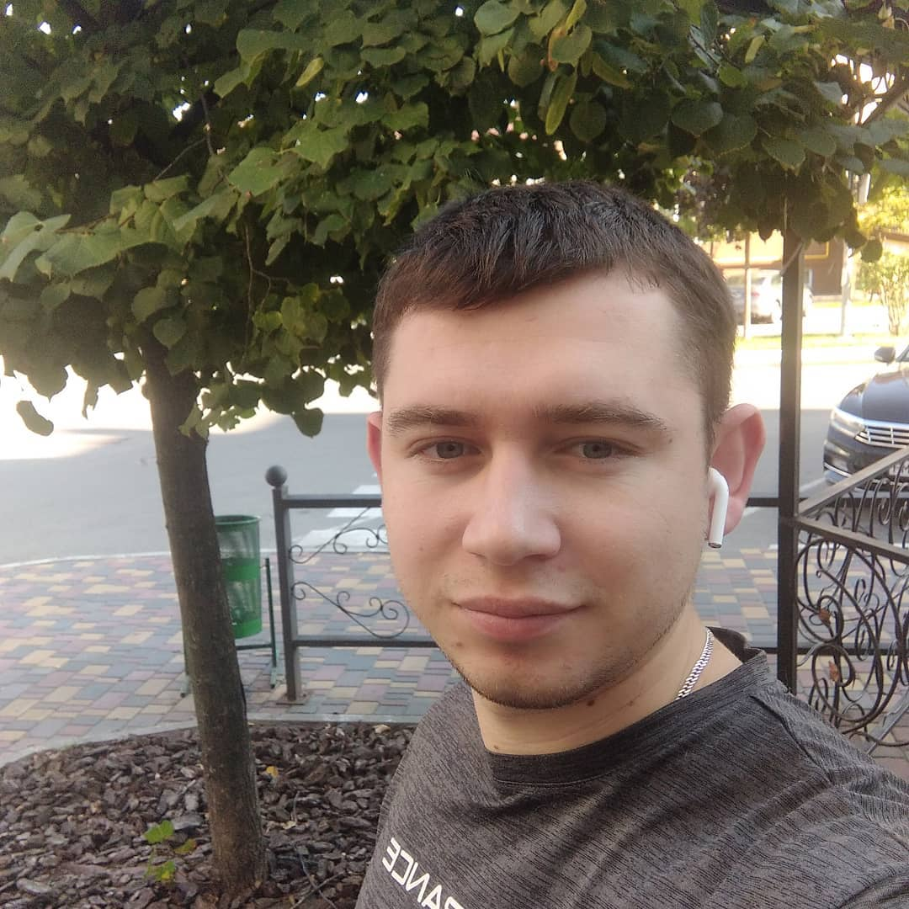

Черевко Богдан Вікторович

Ключова інформація:
- Здав на сертифікат 1с Професіонал
- Добре володію комп'ютером
Досвід роботи
- BAF розробник
квітень 2023 - по теперешній час
ТОВ "Маркет Універсал ЛТД"
мережа Аптек DS
- Розробка обробок читання файлів для упр і звичайні форми
- Розробка сладних і простих запитів
- Перенос і розробка звітів
- Перенос і розробка друкованих форм
- Написання інтеграції із сайтом, написання (викорисатння методів:Delete,Post,PUT,GET
- Підримка користувачів бази(виправлення багів, консультація користувачів)
- Підримка обмінів між базами(Контроль даних)
- Створення фонових обмінів. Робота із фоновими завданнями
- BAF розробник
Кві 2021 - Бер 2023 (2 роки)
TQM Systems
IT - консалтинг / Послуги / Виробництво устаткування
- Знання стандартних об'єктів конфігурації УТП, Бухгалтерія
- Хороші навички роботи з запитами та СКД
- Вміння реалізовувати проектні задачі (включаючи спілкування з користувачами)
- Базові знання SQL (робив бекап, створював SQL базу для користувача)
- Допис бази для користувача
- Знання Конвертації данних
- Досвід роботи з керованими формами
- Створення фонових обмінів. Робота із фоновими завданнями
- Вмію працювати з різними зовнішніми файлами для імпорту/експорту
- Бухгалтер ОЗ
Лют 2018 - Сер 2020 (2 роки 7 міс)
ТОВ Комплекс Агромарс
- Ведення бухгалтерського обліку відповідно до вимог чинного законодавства України в частині, що стосується обліку тих, що належать організації необоротних активів, оприбуткування, введення в експлуатацію, переміщення, передача, модернізація, нарахування зносу основних засобів, необоротних матеріальних активів, нематеріальних активів.
- Відображення на рахунках бухгалтерського обліку операції, пов'язані з рухом необоротних активів: внутрішнє переміщення, введення в експлуатацію, списання (ліквідація), часткова ліквідація, демонтаж, консервація, розконсервація, комплектація, розкомплектація, передача в оренду, отримання в оренду, реалізація, оприбуткування лишків, списання нестач, нарахуванням зносу.
- Брав участь у проведенні інвентаризації ОЗ, та передачі їх матеріально відповідальним особам.
- Облік товарів і запасів
- Складання та подача статистичної звітності, щодо основних засобів
- Складання наказів
- Перевірка оборотно - сальдової відомості по рахункам (1521, 1531, 1522, 151, 1541 по надходженню основних засобів)
- Перевірка затрат по ОЗ(91,92,93, 23)
- Введення в експлуатацію транспорту
Освіта
- Білоцерківський Національний Аграрний університет (Біла Церква)
Рік закінчення 2017
Облік і оподаткування
Володіння мовами
- Російська - вище середнього
- Українська - вільно
- Можу проходити співбесіду на цій мові